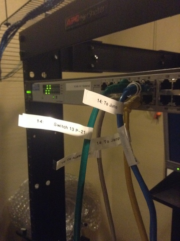
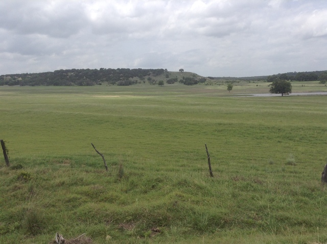
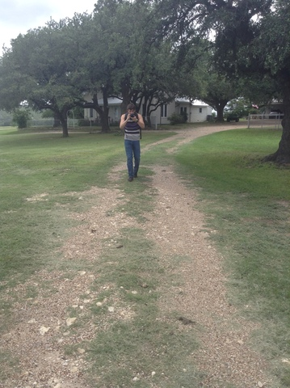
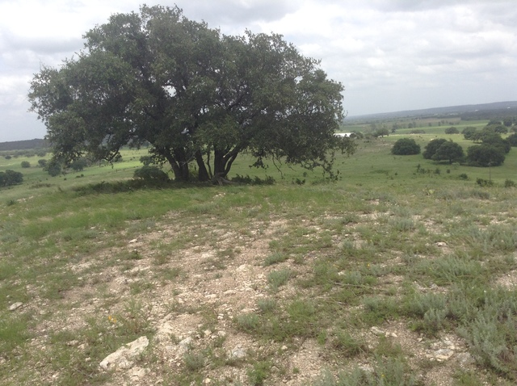
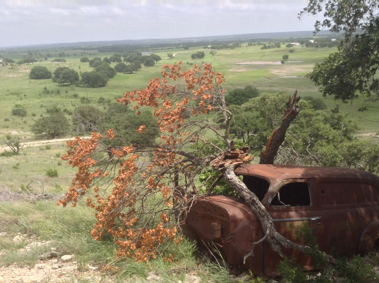
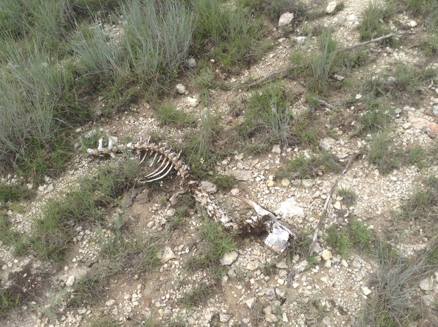
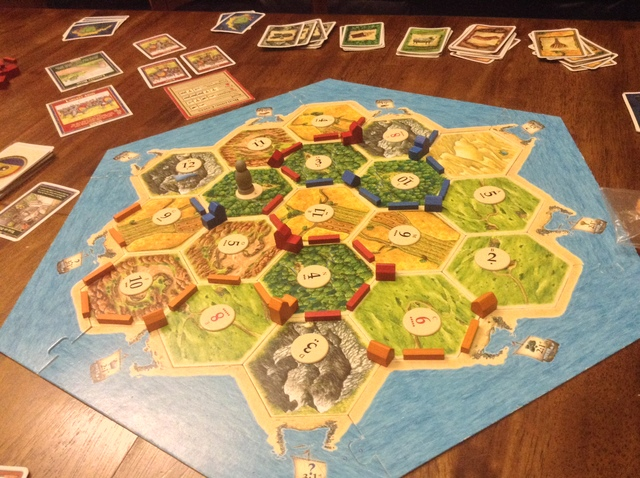
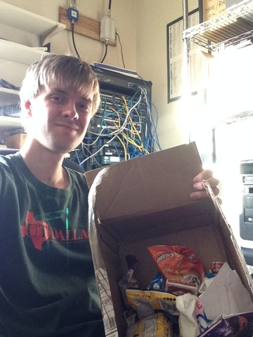

This was a pretty slow week as far as work on the farm went. The Asterisk configuration is about as pretty as possible for now, and we've now got a temporary firewall specifically set up for that server. We're missing a few switches, and they won't be in for another day or two. In anticipation, I wound up spending a lot of time labelling cables. In the process, some of the unnamed (or unmarked) machines got new names for clarity of labelling. The Asterisk server is Anakin, our old dJango server is Jango Fett, our Juniper gateway is Juno Eclipse...

Something else that slowed everything down was lack of email communication. The email forwarders that Matt relied on for years are now being blocked by Gmail, and so none of my emails went through for a while until we could figure out the problem. For now we've got a workaround, and we're still waiting on a response from Google. We're praying that this gets fixed quickly, because communications are a big part of Matt's (and my own) work.
The lack of immediate tech stuff has given me time to get off the farm for a while. Yesterday, Jachin (the other intern here) and I took a hike out to "the mountain," which isn't really a mountain but it's the closest thing to it on the Wallace's property. We took the scenic route around, through an old truck graveyard, past a couple ponds, over a few fences, and up the side of the hill. It was a good hour-and-a-half trek, and it was uphill both ways. It's beautiful to see what God's made from such a view.





I had the great opportunity to get to know Matt better by losing to him in board games. He and I taught Jachin how to play The Settlers of Catan (a trading / resource-management game), and Matt taught both of us Acquire (a stock-collecting / money-making game). Last night, Matt said that he had never won an Acquire game with so much money at the end. Matt's got a pretty good taste when it comes to board games.

I got a joyful surprise from First Baptist Church at Irving this week, too! Go Now was asking local churches to send packages to us missionaries, and I got mine Friday afternoon. I'd like to give a special thank you to the congregation of First Baptist at Irving for that gift.

Our churchgoing experiment began today with the historic St. Olaf Lutheran Church in Cranfills Gap. I was surprised how similar the Lutheran order of worship was to a Presbyterian service, with differences in the how at every step. I'm glad for the opportunity I had to worship there today!
Today in the service, we read the passage about God's providence to Abraham of a sacrifice in exchange for his son. After God had already asked him to leave his homeland for a new, remote land, and God gave Abraham and Sarah a son after years of barrenness, God told Abraham to sacrifice his son on a nearby mountain. Each time God called, Abraham responded, "Here I am." At the last moment, God told Abraham to stop, and he provided a ram already prepared to be sacrificed.
Last week, I got to meet a group of people who said "Here I am" when God asked them to leave their homeland to go teach the nations about Jesus. Just over a month ago, I got to meet hundreds of college students who said "Here I am" when they were called to go out and give their summer for the Lord. But God isn't done calling them, and he's not done calling me, just as he wasn't done calling out to Abraham. With the network here secure for the time being, I feel like this is a good week to focus prayer on all of the missionaries who are dotting the globe, that they wouldn't stop listening for God's callings. God still has work to be done. Join me in praying that we would all be able to say "Here I am" over and over again.